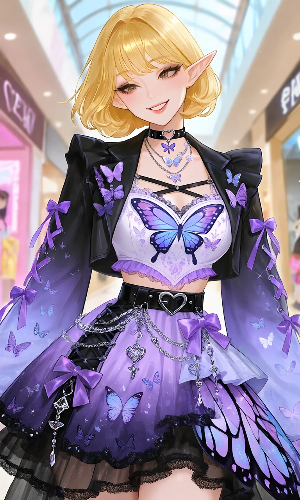
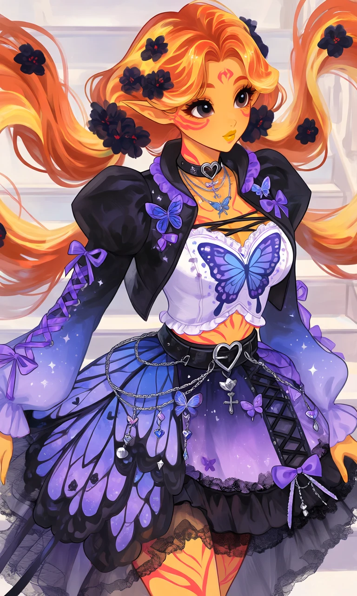

Butterfly After Dark

Outfit Prompt
Gradient Butterfly Jacket that is cropped, open-front jacket with a structured collar, Black at the shoulders/upper sleeves fading into a soft periwinkle-to-lavender gradient on the lower sleeves and hem. All-over butterfly prints (various sizes and shades of purple/blue). Small white star and sparkle accents. Purple ribbon lace-up details running down both sleeves (with bows). Purple ruffled trim on the collar and cuffs. Purple bows and small butterfly appliqués on the chest area. Slightly puffed shoulders for volume.
Inner Top: Butterfly Bustier/Camisole Fitted, cropped bustier-style top worn under the jacket, White base with lavender and purple accents. Large, prominent blue-purple butterfly print in the center. Ruffled lace trim along the neckline and hem. Criss-cross black straps across the chest (with small studs/decorative elements). Delicate sparkle and floral accents around the butterfly.
Multi-layered Tiered Skirt with High-volume, asymmetrical tiered skirt with heavy decoration, Gradient purple-to-black with sheer black tulle layers. Multiple layers of fabric (satin-like, tulle, and lace). Large butterfly wing prints on the outer purple layers. Scattered smaller butterfly motifs and sparkles. Black lace-up corset-style panel on one side. Numerous purple satin bows placed strategically. Silver chains and dangling charms (hearts, butterflies, crystals) hanging from the waist and layers. Ruffled black tulle underskirt for extra volume.
Black leather choker with a heart-shaped pendant and small purple butterfly charm, plus a dangling cross. Multiple layered silver necklaces with butterfly and heart motifs. Wide black belt with a large silver heart-shaped buckle and additional metal hardware. Chains, crystal droplets, and tiny butterfly charms dangle from the jacket sleeves, skirt, and belt, creating movement and visual interest. Ribbons, bows, lace, and metallic accents are used liberally for a maximalist "doll-like" effect.
Outfit Examples



